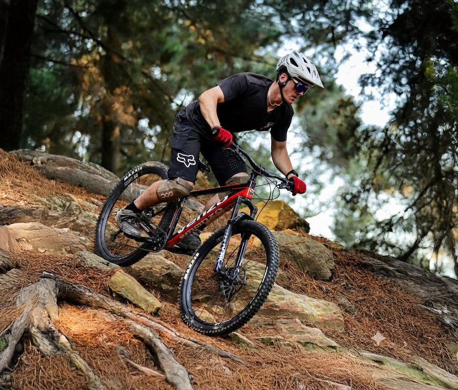
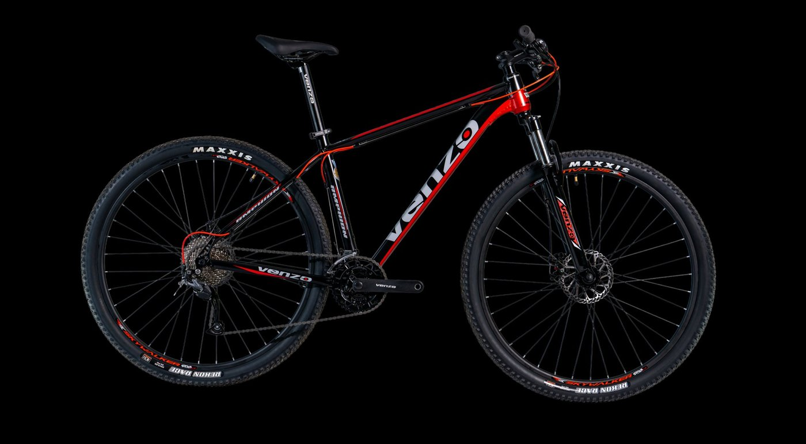
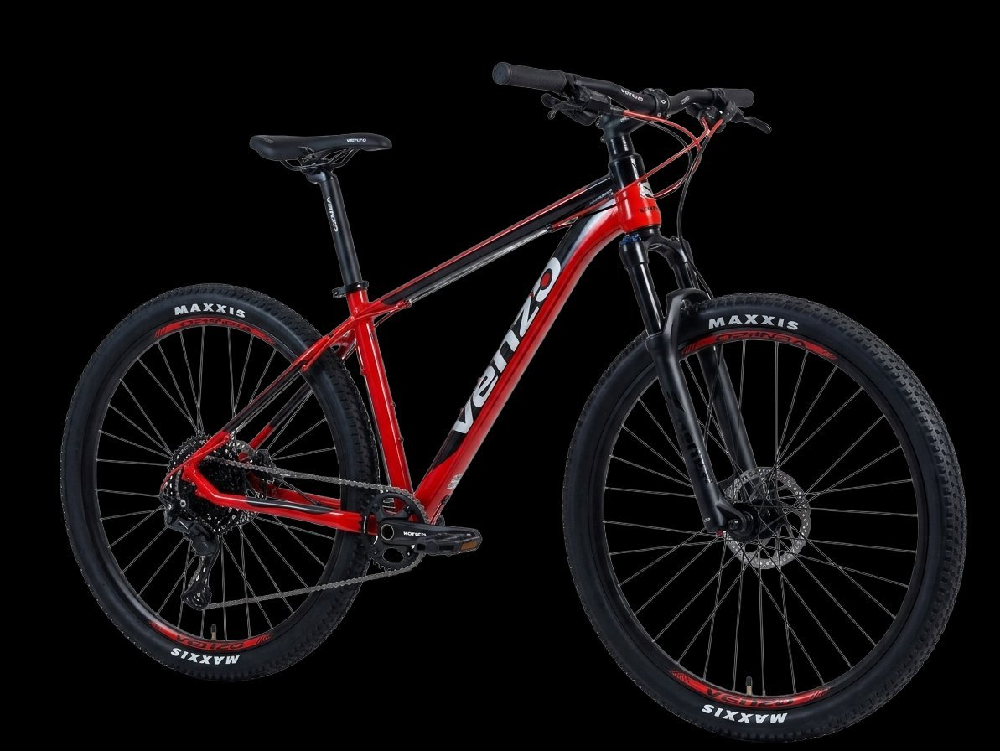
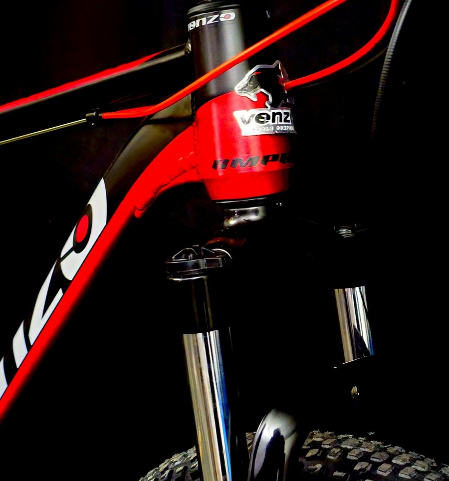
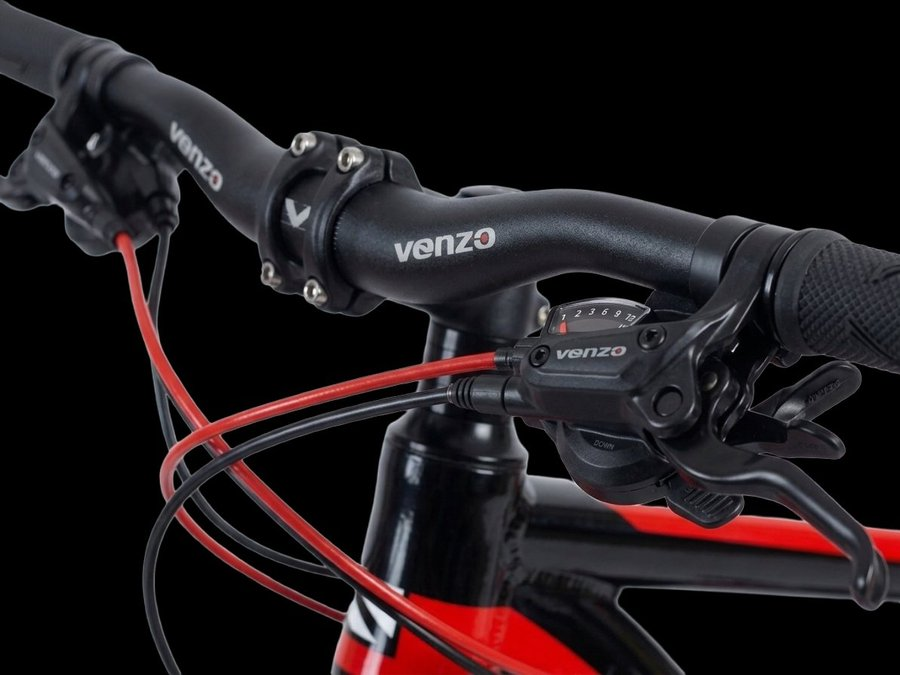
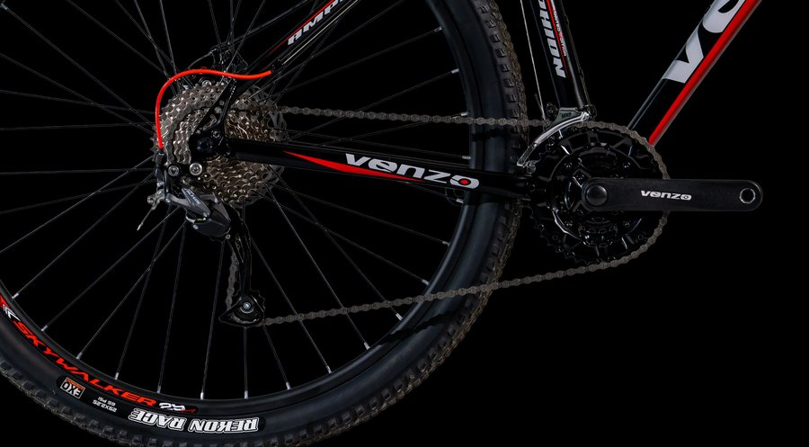
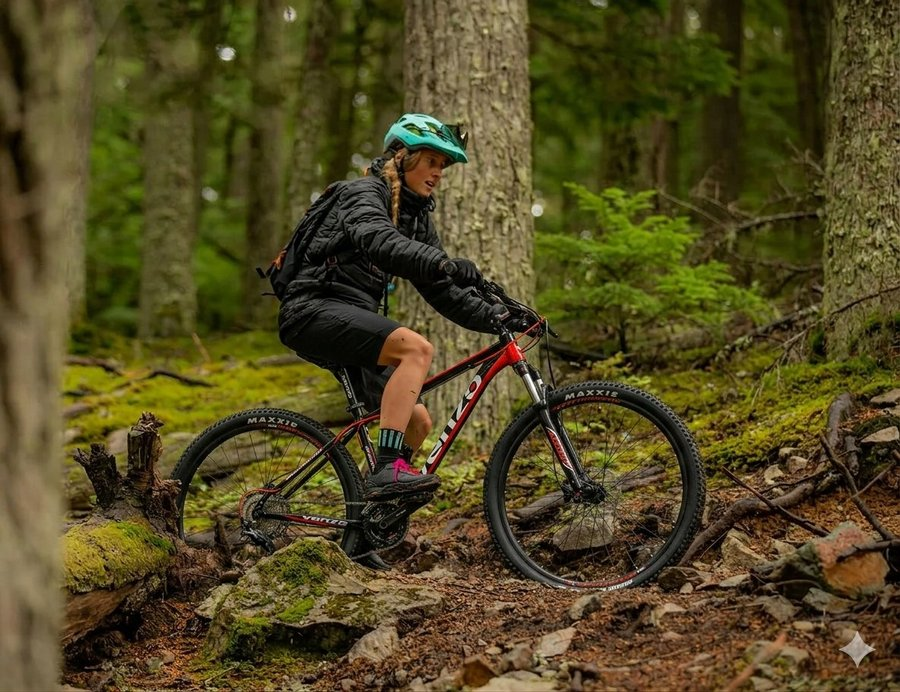
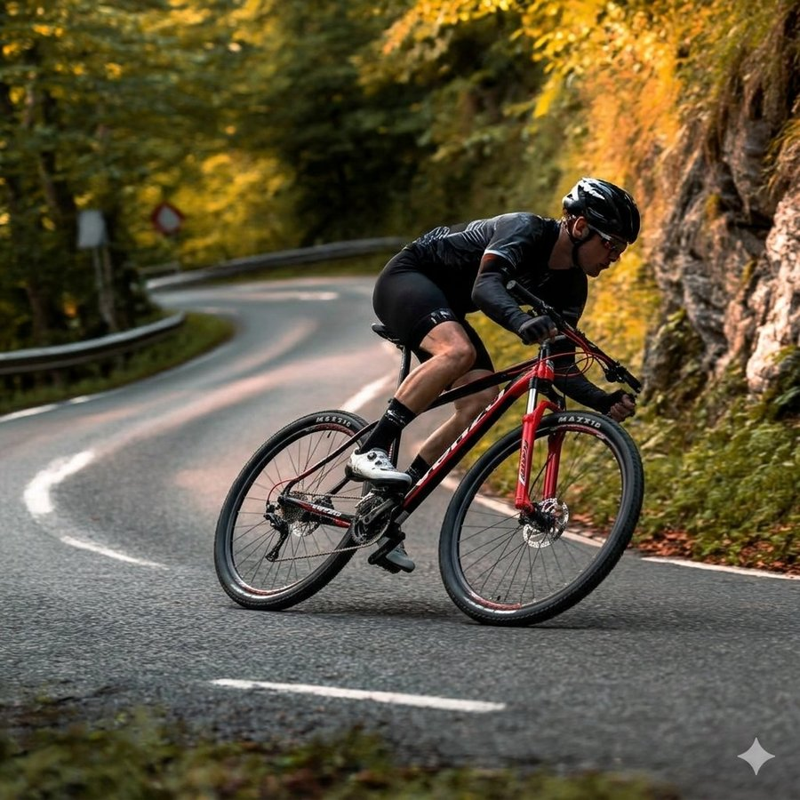

Terreno de montaña
Superá desniveles y caminos exigentes con la estabilidad y el control necesarios para cada ascenso y descenso.
La nueva Amphion combina rendimiento, tecnología y confort para acompañarte en cada kilómetro.
Conocé másEquipada para ofrecer gran desempeño en cada salida.
Estabilidad y confianza en todo momento.
Mayor agilidad para desplazarte con facilidad.
Respuesta ágil para cada desafío.

Una MTB diseñada para quienes buscan dar el salto de nivel. Con componentes de alto rendimiento y una configuración preparada para la aventura, la Venzo Amphion es la compañera ideal para conquistar terrenos exigentes con confianza.
Características pensadas para brindar una experiencia de conducción más eficiente y segura.





Superá desniveles y caminos exigentes con la estabilidad y el control necesarios para cada ascenso y descenso.

Disfrutá de recorridos al aire libre con una conducción cómoda y segura en superficies irregulares.

Mantené un rendimiento constante y una experiencia confortable incluso en trayectos más extensos.
Sí, su diseño versátil permite disfrutarla tanto si estás dando tus primeros pasos en el MTB como si ya tuvieras experiencia.
Solo necesita revisiones periódicas de frenos, transmisión y presión de neumáticos para conservar su rendimiento óptimo.
Sí, su versatilidad le permite adaptarse también a calles y caminos pavimentados sin perder comodidad.
El talle ideal depende de tu altura y del tipo de recorrido; consultá nuestra guía de talles o visitá un local Venzo para asesorarte.